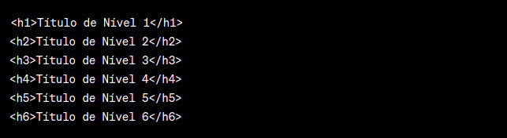
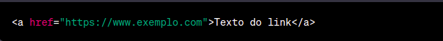
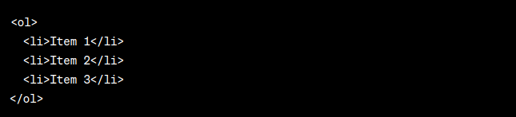
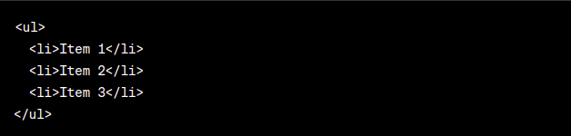
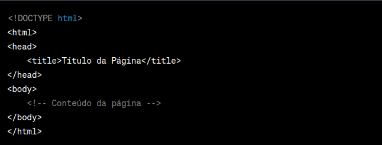

HTML (HyperText Markup Language) é uma linguagem de marcação utilizada para estruturar e apresentar o conteúdo em uma página da web. É a base fundamental de qualquer página da web e é interpretada pelos navegadores para exibir o conteúdo de forma visual.
HTML utiliza uma sintaxe composta por elementos (tags) que são inseridos no código para indicar a estrutura e o significado dos diferentes elementos de uma página web. Cada tag é delimitada por "<" e ">" e pode conter atributos para fornecer informações adicionais sobre o elemento. Os elementos HTML descrevem a estrutura lógica de uma página, como títulos, parágrafos, links, imagens, tabelas e formulários. Esses elementos permitem organizar e apresentar o conteúdo de forma hierárquica e interativa.
Além disso, o HTML também oferece suporte para estilização básica por meio de atributos embutidos, como cores, tamanhos de fonte e estilos de texto. No entanto, para estilos mais avançados, é comum utilizar o CSS (Cascading Style Sheets) em conjunto com o HTML. Em resumo, o HTML é a linguagem básica para estruturar e organizar o conteúdo de uma página da web, definindo os elementos e suas relações, permitindo que os navegadores interpretem e exibam o conteúdo de forma adequada aos usuários.
A comunicação entre um cliente e um servidor é um processo fundamental na troca de informações em muitas aplicações de rede. Essa comunicação geralmente ocorre usando um modelo de solicitação-resposta, no qual o cliente envia uma solicitação ao servidor e o servidor responde com os dados solicitados ou uma confirmação do sucesso da operação.
Ao trabalhar com desenvolvimento web, a comunicação cliente-servidor é fundamental para a troca de informações entre um navegador (cliente) e um servidor web. Aqui está uma explicação mais detalhada de como ocorre essa comunicação específica para o desenvolvimento web:
Requisição HTTP: O cliente, geralmente um navegador, inicia a comunicação enviando uma solicitação HTTP (Hypertext Transfer Protocol) para o servidor. Essa solicitação contém informações como o método HTTP (por exemplo, GET, POST, PUT, DELETE) que define a ação a ser executada no servidor, o URL do recurso desejado e os cabeçalhos HTTP opcionais que fornecem informações adicionais sobre a requisição.
Roteamento no servidor: O servidor web recebe a requisição HTTP e a roteia para o destino apropriado dentro do aplicativo web. Isso geralmente envolve o uso de rotas definidas no servidor para mapear o URL da requisição para o código correspondente no servidor.
Processamento da requisição: O servidor executa o código apropriado para lidar com a requisição. Isso pode envolver a recuperação de dados do banco de dados, processamento de formulários, autenticação do usuário, geração de conteúdo dinâmico, etc. O servidor pode usar várias tecnologias e linguagens de programação, como PHP, Python, Ruby, Java, Node.js, para processar a requisição.
Acesso a recursos: Durante o processamento da requisição, o servidor pode precisar acessar recursos, como bancos de dados ou sistemas de arquivos, para obter ou manipular dados. Isso é feito usando consultas ou chamadas de API adequadas.
Geração da resposta: Com base na requisição e nas ações realizadas, o servidor gera uma resposta HTTP. A resposta inclui um código de status HTTP que indica o resultado da solicitação (por exemplo, 200 para sucesso, 404 para recurso não encontrado, 500 para erro do servidor) e um corpo que contém os dados ou conteúdo da resposta.
Envio da resposta: O servidor envia a resposta HTTP de volta ao cliente, geralmente no formato de texto. A resposta é enviada usando o protocolo HTTP e inclui os cabeçalhos relevantes, como Content-Type (tipo de conteúdo), Content-Length (tamanho do conteúdo) e outros cabeçalhos opcionais.
Processamento da resposta no cliente: O cliente, que é o navegador, recebe a resposta HTTP e processa-a de acordo. Ele interpreta os cabeçalhos para entender o tipo de conteúdo recebido e exibe o conteúdo na interface do usuário do navegador. Dependendo do tipo de resposta, o navegador pode exibir HTML, CSS, JavaScript, imagens, arquivos de download, etc.
Interação adicional: O processo pode envolver interações adicionais entre o cliente e o servidor, onde o cliente pode enviar mais solicitações para buscar recursos adicionais, enviar formulários, fazer atualizações em tempo real usando tecnologias como WebSockets ou AJAX, entre outros.
Encerramento da conexão: Após a troca de informações, a conexão é encerrada pelo cliente ou pelo servidor, liberando recursos e permitindo que o cliente acesse outros recursos ou envie solicitações para outros servidores.
(voltar)Uma tag em HTML é um elemento fundamental usado para marcar e definir diferentes partes de uma página web.
As tags são representadas por meio de palavras-chave ou códigos delimitados por caracteres "<" e ">".As tags são usadas para definir a estrutura e o significado dos elementos na página, como títulos, parágrafos, links, imagens, tabelas, formulários e muitos outros. Cada tag tem uma função específica e indica ao navegador como exibir e interpretar o conteúdo.
Existem dois tipos principais de tags em HTML:
Tags de abertura e fechamento: São compostas por uma tag de abertura ("
Os principais elementos do HTML
Tag HTML
A tag html faz parte da estrutura básica do documento, esta tag deve ser colocada no início do código do documento e é usada para indicar ao navegador que se trata de um documento HTML, já que os navegadores poderão ler outros tipos de documentos.
Tag head
A tag head faz parte da estrutura básica do documento, sua finalidade é definir o cabeçalho do documento com informações que não serão exibidas dentro do conteúdo da página.
Tag body
A tag body faz parte da estrutura básica do documento, sua finalidade é definir o corpo do documento, ou seja, tudo que estiver dentro da tag body será mostrado de alguma forma no conteúdo da página.
Parágrafo <p>
A tag <p>deve ser aberta e fechada para definir um parágrafo.
Cabeçalho
As heading tags, ou tags de cabeçalho, ajudam a criar uma hierarquia entre as partes do texto, separando-o em seções. O <h1> é o cabeçalho de maior relevância, seguido pelo <h2>, <h3> e assim sucessivamente até o <h6>, de menor importância.
Tag (<img>)
A tag de imagem não precisa ser fechada, já que o seu conteúdo é definido na própria tag com o atributo “src”.
Âncora (<a>)
A tag de âncora define um link para outra página. O atributo “href” determina o destino desse link.
Lista ordenada (<ol>)
Uma ordered list, ou lista ordenada, é exibida com elementos numerados. Cada elemento deve ser marcado com a tag <li> (list item).
ÂLista não ordenada (<ul>)
A tag unordered list, ou lista não ordenada, mostra os elementos como bulletpoints.
Estrutura básica do documento:
O código acima define a estrutura básica de um documento HTML.
Aqui está uma descrição de cada elemento:
<!DOCTYPE html>: Declaração que define a versão do HTML utilizada no documento. No caso acima, html indica que estamos usando a versão HTML5.
<html>: Elemento raiz do documento HTML.
<head>: Elemento que contém metadados e informações sobre a página, como o título exibido na aba do navegador.
<title>: Elemento que define o título da página, que é exibido na aba do navegador ou na barra de título da janela.
<body>: Elemento que contém o conteúdo visível da página, como texto, imagens, links, etc.
Dentro do elemento <body>, você pode adicionar o conteúdo da página, como parágrafos, cabeçalhos, imagens, links e outros elementos HTML Essa é a estrutura básica de um documento HTML, e você pode adicionar mais elementos e estilos para personalizar e estruturar sua página da maneira desejada.
(voltar)